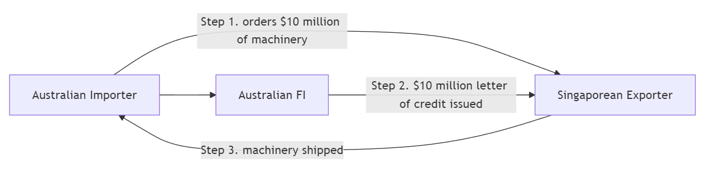

AFIN8003 Week 10 - Sovereign Risk, Foreign Exchange Risk, and Off-Balance-Sheet Risk
Banking and Financial Intermediation
Dr. Mingze Gao
Department of Applied Finance
2026-05-12
Sovereign Risk, Foreign Exchange Risk, and Off-Balance-Sheet Risk
Introduction
Three risks that can sink a bank without a single domestic borrower missing a payment:
Foreign Exchange (FX) Risk — currency risk. The potential for losses when exchange rates move against the FI’s foreign-denominated assets, liabilities, or revenues. In 1992, George Soros famously made $1 billion in a single day shorting the British pound. The Bank of England was on the other side of that trade.
Sovereign Risk — the risk that a government defaults on its debt or blocks its residents from servicing foreign obligations. Even a perfectly creditworthy Greek company could not repay its foreign lenders if Athens imposed capital controls — and in 2015, Greece did exactly that.
Off-Balance-Sheet (OBS) Risk — risks from contingent liabilities that sit in the footnotes, not on the balance sheet: guarantees, derivatives, letters of credit, loan commitments. AIG had $440 billion of off-balance-sheet credit default swaps in 2008 — exposures that did not appear on its balance sheet until they triggered a $182 billion taxpayer bailout.
Foreign exchange risk
Foreign exchange rates
A foreign exchange (FX) rate is the price at which one currency (e.g., the U.S. dollar) can be exchanged for another currency (e.g., the Australian dollar).
Two basic types of FX transactions:
Spot FX transactions involve the immediate settlement, or exchange, of currencies at the current (spot) exchange rate.
Forward FX transactions involve the exchange of currencies at a specified exchange rate (i.e., the forward exchange rate) which is settled at some specified date in the future.
Source of FX risk exposure
Assets and liabilities denominated in foreign currencies
making foreign currency loans
issuing foreign currency-denominated debt
The trading of foreign currencies involves
purchase and sale of currencies to complete international transactions
facilitating positions in foreign real and financial investments
accommodating hedging activities
speculation
Substantial risk arises via open positions (unhedged positions).
FX exposure
An FI’s overall FX exposure in any given currency can be measured by the net position exposure, which is measured in local currency as
FI could match its foreign currency assets to its liabilities in a given currency and match buys and sells in its trading book in that foreign currency
reduce its foreign exchange net exposure to zero and thus avoid FX risk.
Financial holding companies can aggregate their foreign exchange exposure through their banking, insurance and funds management businesses under one umbrella
allows them to reduce their net foreign exchange exposure across all units.
FX rate volatility and FX exposure
We can measure the potential size of an FI’s FX exposure as:
\[
\begin{aligned}
\text{Dollar loss/gains in currency } i &= \text{Net exposure in foreign currency } i \text{ measured in local currency} \\
&\times \text{Shock (volatility) to the exchange rate of local currency to foreign currency } i
\end{aligned}
\]
Greater exposure to a foreign currency combined with greater volatility of the foreign currency implies greater daily earnings at risk (DEAR).
Reason for FX volatility: fluctuations in the demand for and supply of a country’s currency
FX rate volatility and FX exposure (cont’d)
\[
\begin{aligned}
\text{Dollar loss/gains in currency } i &= \text{Net exposure in foreign currency } i \text{ measured in local currency} \\
&\times \text{Shock (volatility) to the exchange rate of local currency to foreign currency } i
\end{aligned}
\]
Example
On September 8, 2024, an Australian FI has a net long position in New Zealand dollars (NZD) of NZD$1,000,000. The exchange rate is 0.92 AUD/NZD — i.e., NZ$1 buys A$0.92.
It is now October 8, 2024, and the exchange rate becomes 0.94 AUD/NZD. The AUD has depreciated relative to the NZD. Calculate the FI’s dollar loss/gain for this shock.
The AUD value of the NZD position on September 8 is \(\text{NZD}\$1{,}000{,}000\times 0.92=\text{AUD}\$920{,}000\).
The AUD value of the NZD position on October 8 is \(\text{NZD}\$1{,}000{,}000\times 0.94=\text{AUD}\$940{,}000\).
The gain on the net long position in NZD is \(\$940{,}000-\$920{,}000=\text{AUD}\$20{,}000\).
Intuition: a long FX position gains when the foreign currency appreciates. If the FI had been short NZD, this same move would have been a A$20,000 loss.
FX rate volatility and FX exposure (cont’d)
The FI has a €2.0 million long trading position in spot euros at the close of business on a particular day. The exchange rate is €0.80/$1, or $1.25/€, at the daily close. Looking back at the daily changes in the exchange rate of the euro to dollars for the past year, the FI finds that the volatility or standard deviation (\(\sigma\)) of the spot exchange rate was 50 basis points (bp). What is the DEAR?
\[
\text{DEAR} = \text{Dollar value of position} \times \text{FX volatility}
\]
Dollar value of position = €2.0 x 1.25 $/€ = $2.5 million
FX volatility = 2.33\(\sigma\) = 2.33 x 0.005 = 0.01165
DEAR = $2,500,000 x 0.01165 = $29,125
Interaction of interest rate, inflation, and exchange rates
Global financial markets are increasingly interconnected, so are interest rates, inflation, and foreign exchange rates.
We now explore how inflation in one country affects its foreign currency exchange rates, focusing on purchasing power parity (PPP).
Next, we examine the relationship between domestic/foreign interest rates and spot/forward foreign exchange rates, known as interest rate parity (IRP).
Purchasing Power Parity
By the Fisher equation, the nominal interest rate \(R\) equals the real rate \(r\) plus the inflation rate \(\pi\):
\[R = r + \pi.\]
For two countries — say Australia (AU) and the United States (US):
If real interest rates are equal across countries (\(r_{AU}=r_{US}\)), then the nominal interest-rate spread equals the inflation differential:
\[R_{AU} - R_{US} = \pi_{AU} - \pi_{US}.\]
Why assume equal real rates across countries?
With free capital mobility, investors arbitrage real-return differences: capital flows toward the country with the higher real rate, bidding up asset prices there until real returns equalise. This is real interest rate parity — the cross-country counterpart of the International Fisher Effect. In practice, frictions (capital controls, taxes, risk premia) keep real rates only approximately equal, which is why the relation should be read as a long-run benchmark rather than a daily identity.
Important
Under a floating exchange-rate regime, when inflation rates diverge across countries, the nominal exchange rate must adjust so that purchasing power stays comparable.
Purchasing Power Parity (PPP) is one theory explaining how this adjustment takes place.
Purchasing Power Parity (cont’d)
PPP is built on the law of one price: in an efficient market with no trade barriers, an identical good must sell at the same price across countries once expressed in a common currency.
A quick illustration.
A candy costs US$1 in the U.S. and ¥100 in Japan.
If US$1 = ¥100, the two prices are equivalent — parity.
Now Japan experiences inflation: the candy rises to ¥150, while the U.S. price is unchanged.
At the old rate (¥100/$), one U.S. dollar buys only two-thirds of a candy in Japan — the same money no longer buys the same good.
For the law of one price to be restored, the yen must depreciate to ¥150/$.
In short, PPP says the same money should buy the same goods anywhere. When relative prices diverge, the exchange rate must adjust to bring purchasing power back into line.
Purchasing Power Parity (cont’d)
Tip
PPP’s core idea: price differences drive trade flows, which drive the demand for and supply of currencies — and so the exchange rate.
In its relative form, PPP says the percentage change in the exchange rate equals the inflation differential between the two countries:
\(S_{domestic/foreign}\) is the spot exchange rate, expressed as units of domestic currency per unit of foreign currency
\(\Delta S_{domestic/foreign}\) is the one-period change in that rate.
Purchasing Power Parity (cont’d)
Suppose the current spot rate is \(S_{AUD/CNY} = 0.17\) (i.e., 1 CNY = A$0.17). Chinese inflation is \(\pi_C = 10\%\) and Australian inflation is \(\pi_{AUS} = 4\%\). What does PPP predict for the new exchange rate?
Solving gives \(\Delta S_{AUD/CNY} = -0.0102\). The new rate is \(0.17 - 0.0102 = 0.1598\), so 1 CNY now buys only A$0.1598 — a 6% depreciation of the yuan against the AUD, driven entirely by China’s higher inflation rate.
Purchasing Power Parity (cont’d)
Does PPP hold in practice? Not exactly, and not quickly. Tradable goods come closest; non-tradables (housing, haircuts, healthcare) can diverge for decades.
The Big Mac Index
The Economist has tracked PPP since 1986 using the price of a Big Mac across countries. If a Big Mac costs A$8 in Sydney and US$5 in New York, PPP implies AUD/USD = 0.625. The index is routinely off by 30–50%, which tells you something about how slowly real exchange rates converge — even for an identical burger.
Interest Rate Parity
Covered Interest Rate Parity (CIRP) is a no-arbitrage condition: two riskless strategies for investing $1 of domestic currency over one period must deliver the same payoff.
Code
flowchart LR classDef start fill:#fef3c7,stroke:#92400e,stroke-width:2px,color:#000; classDef dom fill:#dbeafe,stroke:#1e3a8a,stroke-width:1.5px,color:#000; classDef fgn fill:#fce7f3,stroke:#9d174d,stroke-width:1.5px,color:#000; A["$1<br/>today"]:::start A -->|"Strategy 1<br/>deposit at r<sub>d</sub>"| B["1 + r<sub>d</sub><br/>domestic"]:::dom A -->|"Strategy 2 — step 1<br/>buy foreign at spot S"| C["1/S<br/>foreign"]:::fgn C -->|"step 2<br/>deposit at r<sub>f</sub>"| D["(1/S)(1 + r<sub>f</sub>)<br/>foreign"]:::fgn D -->|"step 3<br/>sell at forward F"| E["(1/S)(1 + r<sub>f</sub>)·F<br/>domestic"]:::dom B -.->|"no-arbitrage ⇒ equal"| E
Blue boxes are domestic-currency amounts; pink boxes are foreign-currency amounts. Strategy 1 is one hop; Strategy 2 is three hops through the foreign currency, with the forward locked in today so the round trip is risk-free.
Interest Rate Parity (cont’d)
Setting the two end-of-period payoffs equal gives the CIRP condition:
Intuition: if the domestic rate exceeds the foreign rate (\(r_d > r_f\)), the forward trades at a premium to the spot (\(F > S\)) — the forward compensates the foreign investor for the lower interest income earned abroad. Equivalently, the high-rate currency is expected to depreciate in forward terms.
Interest Rate Parity (cont’d)
Suppose the AUD interest rate is \(r_d = 5\%\), the EUR interest rate is \(r_f = 10\%\), and the initial spot rate is \(S_t = \$0.60/\text{€}\). Assume CIRP holds. What is the one-year forward rate? If the spot rate then rises to \(S'_t = \$0.65/\text{€}\), what is the change in the forward rate?
Equivalently, \(\Delta F_t = \Delta S_t \cdot (1+r_d)/(1+r_f) = 0.05 \times 1.05/1.10 \approx 0.0477\): under CIRP, the forward rate moves one-for-one (scaled by the interest-rate factor) with the spot rate.
Managing FX risk
On-balance-sheet hedging
Match foreign assets to foreign liabilities in the same currency and similar duration
Requires duration matching to control exposure to foreign interest rate risk
A direct match can still earn positive profits via the spread on matched books
Off-balance-sheet hedging
Uses forwards, futures, options and swaps — cheaper, faster, and more flexible than restructuring the balance sheet
Example: an FI expecting a US$10M payment in 90 days locks in today’s forward rate, eliminating uncertainty about the future spot rate
Hedging is not free insurance
On 15 January 2015, the Swiss National Bank suddenly abandoned its 1.20 EUR/CHF floor. The franc surged 20% in minutes. Several FX brokers and hedge funds — many of whom thought they were hedged — went bankrupt before lunch. Hedges are only as good as the counterparties and assumptions behind them.
Sovereign risk
Introduction to sovereign risk
Mismatches in the size and maturities of foreign assets and liabilities expose FIs to FX risk.
Beyond FX risk, holding assets in a foreign country also exposes FIs to country or sovereign risk.
e.g., a foreign corporation may want to repay but be physically prevented by its government
the government of the borrower’s country may prohibit or limit debt payments
foreign currency shortages, adverse political decisions, capital controls, sanctions
Argentina: nine defaults and counting
Argentina has defaulted on its sovereign debt nine times since independence (1816, 1890, 1915, 1930, 1982, 1989, 2001, 2014, 2020). The 2001 default — US$132 billion, the largest in history at the time — wiped out years of profits for European banks holding Argentine bonds. The borrowers’ creditworthiness was almost irrelevant: when the government devalued the peso and froze bank accounts (el corralito), nobody could pay.
Credit risk vs sovereign risk
Credit Risk: This is the risk that a borrower (like a domestic firm) might refuse or be unable to repay its debt. If this happens, lenders can negotiate loan restructuring or, ultimately, pursue bankruptcy proceedings to recover assets. This type of risk is typically manageable through legal proceedings within the borrower’s own country.
Sovereign Risk: This arises when a government (such as the Greek government) intervenes, restricting a domestic corporation from repaying its foreign debts, regardless of the corporation’s financial health. Unlike credit risk, sovereign risk is largely out of the borrower’s control and independent of the borrower’s creditworthiness. In cases of sovereign risk, international lenders have limited legal options, as there’s no global court to enforce debt repayment or asset liquidation against a sovereign state.
Therefore, lending decisions to parties in foreign countries require two steps:
credit quality assessment of borrower
sovereign risk quality assessment of country
Forms of sovereign risk
A sovereign country’s (negative) decisions on its debt obligations or the obligations of its public and private organizations may take two forms: repudiation and restructuring.
Debt repudiation
An outright cancellation of all a borrower’s current and future foreign debt and equity obligations
In 1996, the World Bank, IMF, and major governments launched the Heavily Indebted Poor Countries (HIPC) Initiative, forgiving sovereign debt of the world’s poorest economies
By 2024, 37 countries had received debt relief under the HIPC initiative (Somalia being the most recent in 2023), 31 of them in Africa, totaling roughly US$76 billion in NPV terms
Debt restructuring
Change the contractual terms of a loan — maturity, coupon, principal
Delay payment (extend maturity)
Reduce interest (coupon haircut)
Reduce principal (face-value haircut)
The most common form of sovereign risk. Greece’s 2012 restructuring imposed a 53.5% haircut on private bondholders — the largest sovereign restructuring in history at roughly €100 billion.
Repudiation vs restructuring
Repudiation was more common before World War II, while post World War II, restructuring is more likely.
One reason is that most postwar international debt has been bank loans, while before the war it was mostly foreign bonds.
Bondholders are diverse - hard to reach an agreement to changes in the contractual terms on a bond.
Fewer FIs involved in international lending syndicates.
Many international loan contracts contain “cross-default” provisions: one loan default automatically triggers all loans’ default to prevent a country from selectively defaulting.
Bank bailouts for large banks create (mis)incentives.
Country risk evaluation
An FI can rely on both outside evaluation services or develop its internal evaluation models for sovereign risk.
Outside Evaluation Models
The Euromoney Country Risk Index
The Institutional Investor Credit Ratings
OECD Country Risk Classifications
Internal Evaluation Models
Statistical models
Statistical models for country risk evaluation
Most common form of country risk assessment scoring models based on economical factors
pick a set of variables that may be important in explaining restructuring probabilities
Statistical models for country risk evaluation (cont’d)
Import ratio (IR)
\[
IR = \frac{\text{Total imports}}{\text{Total FX reserves}}
\]
Imports to meet demands - sometimes even food is a vital import - requires FX reserves.
The higher the ratio, the higher sovereign risk.
Note
In 2020, Greece’s IR was approximately 626%, while China’s was around 70%. Greece imported far more goods and services than its FX reserves could cover — an early warning sign for sovereign risk.
Statistical models for country risk evaluation (cont’d)
The higher the ratio, the lower sovereign risk (arguable).
Statistical models for country risk evaluation (cont’d)
Variance of export revenue (VAREX)
\[
VAREX = \sigma^2_{ER}
\]
The higher the variance, the higher sovereign risk.
Statistical models for country risk evaluation (cont’d)
Domestic money supply growth (MG)
\[
MG = \frac{\Delta M}{M}
\]
Weaken local currency by pushing up inflation rate.
The higher the growth, the higher sovereign risk.
Statistical models for country risk evaluation (cont’d)
Develop a scoring model \(f\) as a function of the chosen economic variables:
\[
p = f(TDSR, IR, INVR, VAREX, MG, \dots)
\]
where \(p\) can be the probability of restructuring.
Off-balance-sheet risk
Off-balance-sheet (OBS) activities
OBS items live in the footnotes, not on the balance sheet — until they don’t.
In economic terms, OBS items are contingent assets and liabilities that affect the future shape of an FI’s balance sheet. They potentially produce positive or negative future cash flows for the FI.
The true picture of net worth should include the market value of on- and off-balance-sheet activities.
Incentives to increase OBS activities:
Generate additional fee income
Avoid regulatory costs or taxes
Reserve requirements
Deposit insurance premiums
Capital adequacy requirements
Enron: when footnotes hide a company
Enron used hundreds of off-balance-sheet special purpose entities to keep US$30+ billion of debt out of its accounts. When the structures unwound in 2001, the company collapsed in weeks — at the time, the largest bankruptcy in US history. The lesson: footnotes can hide a company.
Major types of OBS activities
Loan commitment: Contractual commitment to make a loan up to a stated amount at a given interest rate in the future.
Letters of credit: Contingent guarantees sold by an FI to underwrite the performance of the buyer of the guaranty.
Derivative contract: Agreement between two parties to exchange a standard quantity of an asset at a predetermined price at a specified date in the future.
When-issued trading: Trading in securities prior to their actual issue.
Loans sold: Loans originated by an FI and then sold to other investors that (in some cases) can be returned to the originating institution in the future if the credit quality of the loans deteriorates.
Loan commitments
Commitment to make a loan up to a stated amount at a given interest rate in the future
Nowadays very popular, sometimes more so than spot loans
Charge up-front fee and back-end fee
The upfront fee applies on the whole commitment size and the back-end fee applies on any unused balances at the end of the period.
Example of the fees
Suppose an FI gives a one-year $10 million loan commitment to a firm, with an upfront fee of 1/8% and a back-end fee of 1/4%.
Upfront fee (charged on the full commitment): \(\$10{,}000{,}000 \times 1/8\% = \$12{,}500\).
If the firm draws down only $8 million over the year, the unused portion is $2 million. The back-end fee is charged on this unused balance:
On fixed-rate loan commitments the bank is exposed to interest rate risk
On floating-rate commitments, there is still exposure to basis risk
Draw-down risk
Uncertainty of timing of draw-downs exposes bank to risk
Back-end fees are intended to reduce this risk
Credit risk
Credit rating of the borrower may deteriorate over the life of the commitment
Addressed through ‘adverse material change in conditions’ clause
Aggregate funding risk
During a credit crunch, bank may find it difficult to meet all of the commitments (compare to externality effect)
Bank may need to adjust its risk profile on the balance sheet in order to guard against future draw-downs on loan commitments
Letter of credit
Documentary (Commercial) letters of credit (LCs)
Contingent guarantees to underwrite the trade or commercial performance
Widely used in both domestic and international trade

Commercial LC
Standby letters of credit (SLCs)
Cover contingencies potentially more severe and less predictable than those covered by LCs
Risks associated with letters of credit
The buyer of the LC may fail to perform — at which point the FI must pay.
During the GFC (2008–09), many US firms could not roll over their maturing commercial paper (CP). The defaults would have triggered the standby letters of credit that liquidity-strapped FIs had written to backstop those CP issues.
The Federal Reserve responded by launching the Commercial Paper Funding Facility (CPFF) in October 2008, directly purchasing CP from issuers.
Rather than letting FI letters of credit be drawn on, the Fed effectively bailed out the CP market — and the FIs backing it.
Why this matters: an FI’s true risk profile during a crisis includes its OBS guarantees. The balance sheet doesn’t show them, but stress hits them first.
Derivative contract
FIs can be either
users of derivative contracts for hedging and other purposes, or
dealers that act as counterparties in trades with customers for a fee
Commitments to buy and sell securities before they are issued: ‘when-issued (WI) trading’
Example: new issues of Australian Treasury Notes are conducted by the Australian Office of Financial Management (AOFM), with the RBA acting as fiscal/settlement agent.
Banks bidding in the T-Note tender can pre-sell expected allocations through forward sales before the auction settles.
FIs may sell the yet-to-be-issued Treasury securities for forward delivery to customers at a margin above the price they expect to pay at the tender.
Risk: “over-commitment” — if the FI’s actual allocation is smaller than the volume already sold forward, it must buy the difference in the secondary market, potentially at a loss.
Loans sold
FI originates loans and sells them to outside investors
Potential outside investors
Other banks
Insurance companies
Unit trusts
Corporations
Loans sold are an indication of FIs moving from asset-transformers to brokers
Recourse:the ability to put an asset or loan back to the seller should the credit quality of that asset deteriorate
‘No recourse’: loan buyer bears all default risk if loan goes bad
With recourse: long-term contingent credit risk for loan seller
Role of OBS activities in reducing risk
OBS activities are not always the villain.
Many are hedges — designed to mitigate exposure to interest rate, FX, or credit risk
Properly used, OBS activities can decrease an FI’s insolvency risk
They are a major source of fee income, especially for the largest, most credit-worthy banks
The danger is asymmetry: small premiums collected in good times can be dwarfed by contingent payouts in bad times (cf. AIG, 2008)
One sentence to remember
On-balance-sheet items determine what an FI looks like today. Off-balance-sheet items determine what it will look like tomorrow — especially in a crisis.
Finally…
Key takeaways
FX risk comes from a net position, not gross exposure. Matching foreign assets and liabilities — or hedging with forwards/futures/options/swaps — neutralises it.
PPP and IRP are the two parities that link inflation, interest rates, and exchange rates. They hold on average and in the long run; in the short run, large deviations create both risk and opportunity.
Sovereign risk ≠ credit risk. A borrower can be perfectly solvent and still default because its government blocks foreign-currency payments. There is no global bankruptcy court for sovereigns — only negotiation.
OBS items hide in the footnotes until they don’t. Loan commitments, letters of credit, derivatives, when-issued trades, and recourse-loan sales all create contingent exposures that can dominate an FI’s risk profile in stress.
Stress is when OBS bites. Quiet markets pay fees; crises trigger commitments.